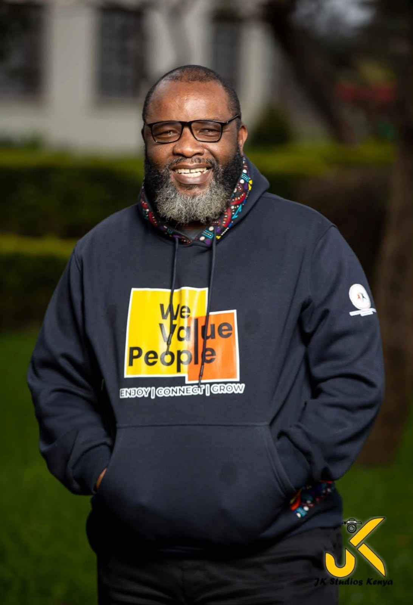

Ministry
Preaching, teaching, pastoral care and the wider work he carries as a shepherd.
Explore his ministryPASTOR · TEACHER · SHEPHERD
Called to shepherd, to teach, and to pray
A pastor whose ministry is built on a simple conviction — that God meets ordinary people faithfully, in the Word, in prayer, and in the company of one another.
ONE ANOTHER FELLOWSHIP
One Another Fellowship is the daily online gathering Pastor James leads every morning from 5:45 to 7:00 AM EAT — worship, the Word, and prayer, before the day begins. Watch today's devotion below.

WHO HE IS
James Martin Okumu is a pastor and teacher who has given his life to shepherding people toward a deeper walk with Christ.
[Replace with a short two or three sentence introduction — where he serves, how long he has been in ministry, and the heart behind his work. The fuller story lives on the About page.]
"Before the day asks anything of us, we bring ourselves to God."
THE WORK
Three ways into the ministry of Pastor James.
Preaching, teaching, pastoral care and the wider work he carries as a shepherd.
Explore his ministryHe teaches live on YouTube every day. Watch the latest devotion or catch up on past ones.
Watch the devotionsThe daily morning gathering he founded, meeting online from 5:45 to 7:00 AM EAT.
About the fellowship"A real testimony goes here — short, specific, and in the person's own words, about what Pastor James's ministry has meant to them." REPLACE WITH A REAL NAME
GET IN TOUCH
For speaking invitations, prayer requests, or to support the ministry, the details are all on the About page.